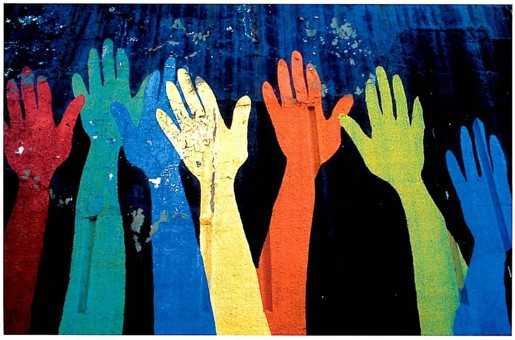

Pacto Social y la Soberanía Popular
El concepto de soberanía popular se deriva del pacto social, ya que la legitimidad del gobierno democrático se basa en el consentimiento del pueblo, tal como se establece en el acuerdo social original. En un sistema democrático, el pueblo es el soberano supremo y tiene la autoridad para establecer y cambiar las leyes y elegir a sus representantes políticos.
Pacto Social
1.El pacto social, también conocido como contrato social, es una idea política que se remonta a los filósofos contratualistas del siglo XVII, como Thomas Hobbes, John Locke y Jean-Jacques Rousseau. Según esta teoría, los individuos acuerdan voluntariamente someterse a un gobierno y respetar las leyes y normas establecidas por ese gobierno a cambio de protección y seguridad para sus derechos y libertades.
Características del Pacto Social:
1Consentimiento Voluntario: El pacto social implica que los individuos consienten en unirse y formar una sociedad política mediante un acuerdo voluntario.
2.Protección de Derechos: Los individuos ceden parte de su libertad y autonomía al gobierno con la expectativa de que este protegerá sus derechos naturales y garantizará la seguridad y el orden en la sociedad.
3. Legitimidad del Gobierno: Según la teoría del pacto social, un gobierno solo es legítimo si se basa en el consentimiento de los gobernados y si respeta los términos del acuerdo establecido en el pacto social.
4. Reciprocidad de Obligaciones: Tanto el gobierno como los ciudadanos tienen obligaciones recíprocas en virtud del pacto social. El gobierno debe gobernar de manera justa y en interés del pueblo, mientras que los ciudadanos deben cumplir con las leyes y contribuir al bienestar común.
Soberanía Popular
La soberanía popular es un principio político que sostiene que la autoridad del gobierno emana del pueblo y que el poder político reside en la voluntad de los ciudadanos. En una democracia basada en la soberanía popular, el pueblo tiene el derecho y la capacidad de participar en la toma de decisiones políticas y elegir a sus representantes mediante elecciones libres y justas.
Aspectos de la Soberanía Popular:
1. Elecciones Democráticas: En un sistema político basado en la soberanía popular, el pueblo participa en elecciones periódicas para elegir a sus representantes en el gobierno, tanto a nivel local como nacional.
2. Participación Ciudadana: Además de las elecciones, la soberanía popular implica la participación activa de los ciudadanos en la vida política y el proceso de toma de decisiones, a través de mecanismos como la participación en debates públicos, la protesta pacífica y el ejercicio de derechos civiles.
3. Rendición de Cuentas: Los representantes electos son responsables ante el pueblo y deben rendir cuentas por sus acciones y decisiones. La soberanía popular implica que el gobierno debe actuar en interés del pueblo y responder a sus demandas y preocupaciones.
4.Límites al Poder Estatal: Si bien el gobierno ejerce autoridad en nombre del pueblo, la soberanía popular también implica la existencia de límites al poder estatal para proteger los derechos individuales y evitar el abuso de poder.
En resumen, el pacto social y la soberanía popular son conceptos fundamentales en la teoría política que subrayan la importancia del consentimiento del pueblo en el gobierno y la legitimidad del poder político. Estos principios son centrales en la construcción y funcionamiento de las democracias modernas, donde la participación ciudadana y el respeto por los derechos individuales son valores fundamentales.
REPRESENTACION

Video
Bibliografía
- Weber, M. (1921). Economy and Society: An Outline of Interpretive Sociology. New York: Bedminster Press, 2(1), 1-902.